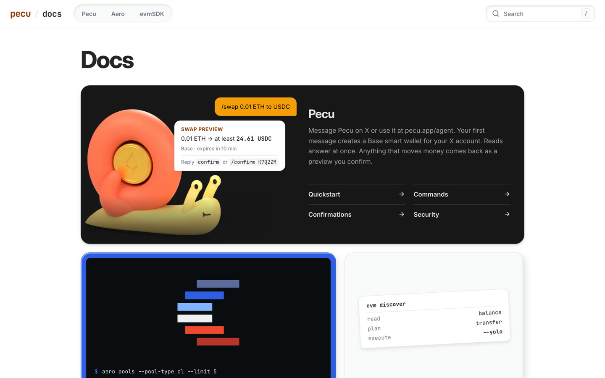
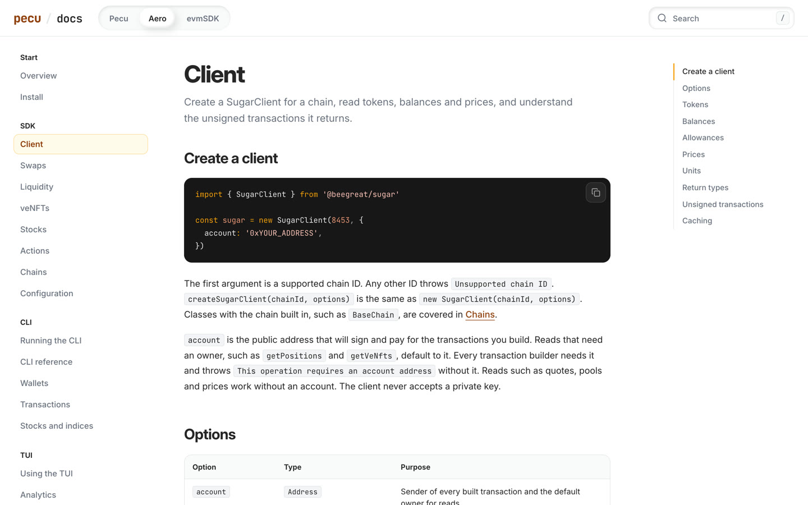
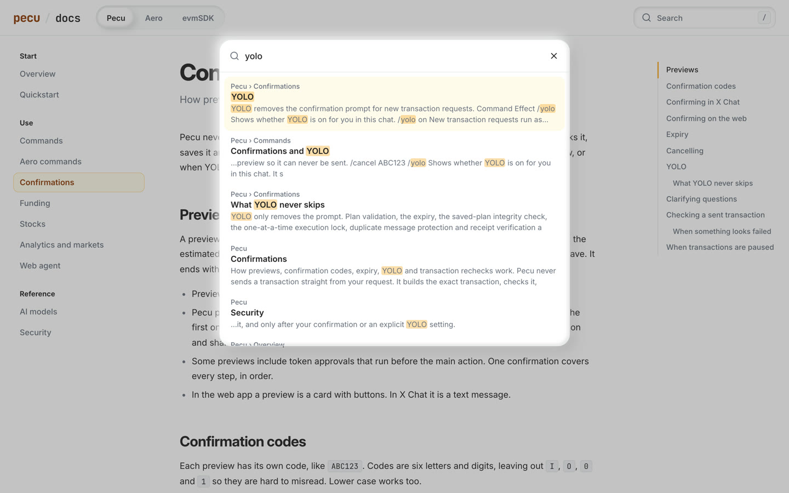
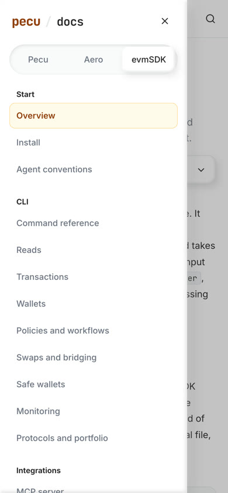

Pecu docs
pecu.app/docs covers Pecu, the Aero SDK with its CLI and TUI, and evmSDK in one place. Live on pecu.app/docs since 23 September 2026.
What is there
- 47 pages: 11 for Pecu, 19 for Aero, 17 for evmSDK.
- A landing page that reuses the homepage tiles, with direct links into each product.
- A page rail, an outline that follows your scroll, previous and next links.
- Search over every heading and paragraph. It opens from the header,
/ or Cmd+K.
- Highlighted code with copy buttons. The highlight colors come from the amber theme.
- On phones the pages move into a drawer and the outline into a disclosure.
/un-aerosdk/docs now redirects to /docs/aero. The homepage, its footer and both SDK landing pages link to the docs.



How it works
The pages are Markdown in apps/pecu/apps/site/docs. build-docs-site.ts renders them during the site build. The build fails on em dashes, curly quotes, H1s, raw HTML, unlabeled code blocks and links to pages or headings that do not exist.
Four agents wrote the content in parallel, one each for Pecu, the Aero SDK, the Aero CLI and TUI, and evmSDK. Each checked commands, flags and defaults against source and --help output rather than the READMEs.
Where the READMEs are wrong
- The Aero README says twelve actions. There are 17.
- The Aero CLI asks once per plan, not once per step.
- The evmSDK README calls
EVM_POLICY mandatory. It is optional.
- The JSON example on the evmSDK landing page uses fields that do not exist.
docs/31 names the classifier model gpt-5.6-luna. The source uses gpt-6-luna.- An Aero journal step stuck in
submitting, and a Crossmint operation that failed in evmSDK, both block new plans with no command to clear them.
Checks
- 425 Pecu tests pass, including 8 new ones for content rules, the build, broken links and routes.
- Design check, site typecheck and the Worker dry-run pass.
- Headless Chrome on all 47 pages at 360px found no horizontal overflow. Search, drawer, copy, outline and reduced motion checked by hand.
- Production: every docs route, the old-path redirects and the SDK landing links respond as expected. Search loads under the site's CSP, with no console errors.

Shipped
Commit 31db14f4 on main, not pushed. pecu-app version 9a7ef033.
Next
- Decide whether the "Known gaps in live testing" section on the Pecu security page stays. It comes from repository notes I could not check against production.